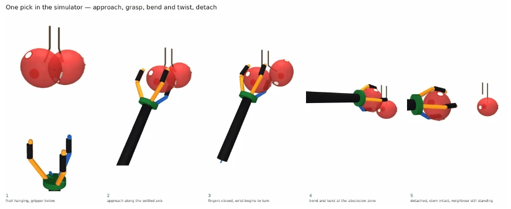

The problem
A harvest planner needs to decide which fruit to attempt, in what order, and with which gripper configuration while protecting the stem. Public detections provide geometry but do not label the outcome of a picking attempt.
02 / Physics World Models
Rehearse physical actions before executing them.
NovaPunk builds simulation environments, outcome models, and planning tools for physical systems. When outcome labels are unavailable, a defined physical environment can generate training examples and provide a separate basis for evaluating a plan.
Discuss this serviceA harvest planner needs to decide which fruit to attempt, in what order, and with which gripper configuration while protecting the stem. Public detections provide geometry but do not label the outcome of a picking attempt.
The harvest example separates physical simulation, learned prediction, and planning. Removing one fruit can change the neighbours, so a sequence must account for state changes as well as individual pick outcomes.
MuJoCo scenes represent the fruit, segmented stalk, competing separation points, and a force-limited gripper. Approach, grasp, bend, twist, and release are simulated rather than assigned an outcome in advance.
The outcome model predicts six pick classes. A separate transition model estimates whether neighbouring fruit remain tilted after a pick; known gravity behavior resolves the unambiguous cases.
The planner selects stations, picking order, and gripper configuration. Neighbour state updates help the plan account for a scene that changes after each action.
Selected actions are replayed in MuJoCo with the learned outcome model excluded from scoring. The report records 3,912 validation picks and shows both agreement and prediction errors.
An internal research prototype for robotic apple harvesting. It combines a MuJoCo environment, learned outcome and transition models, and a planner. The supplied report documents simulation validation; it does not report an orchard field trial.
Recorded videos and figures illustrate the research. No live agent, model, or simulator runs on this page.
The report documents separate checks of physical calculations, invariants, pipeline consistency, and plan replay. In the reported operating configuration, predicted success was 0.788 and realised simulation success was 0.730. That gap illustrates why classification accuracy alone is insufficient for evaluating a planner.
Create a physical scene from fruit geometry.
Try paired actions from the same initial state.
Fit outcome and neighbour-transition models.
Choose stations, sequence, and gripper settings.
Replay the selected plan in MuJoCo.
A single fruit is evaluated across four apertures from the same saved state. The resulting labels describe simulated outcomes.

Recorded MuJoCo simulations from the harvest research. Select play to watch each sequence; these recordings do not operate a physical robot.
Metrics are reproduced from the supplied research or original project account. They have not been independently rerun for this website.
Figures and reported results are drawn from Physics World Models - Sungwon Son, September 2026.
Tell us about your workflow, available data, and the decision or task you want to improve.
Contact NovaPunk